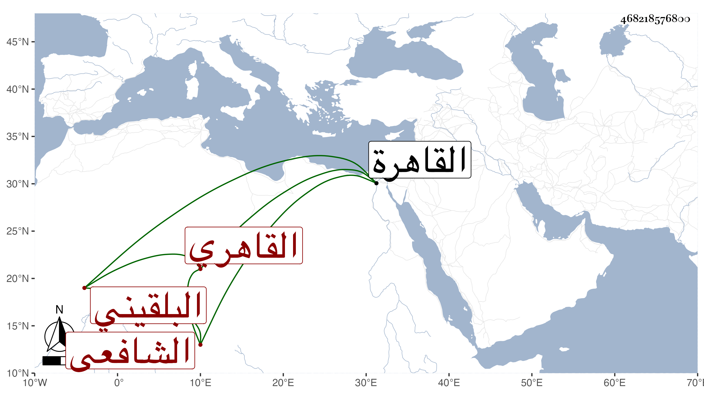

0902Sakhawi.DawLamic.ITO20230111-ara1.EIS1600.468218576800
Biography ID: 468218576800
583
عبد العزيز بن محمد بن عبد العزيز بن محمد بن مظفر بن نصير عز الدين ابن البهاء بن العز البلقيني الأصل القاهري الشافعي الآتي أبوه وجده ويعرف كأبيه بابن عز الدين وبابن شفطر . ولد في سنة أربع وعشرين وثمانمائة بالقاهرة ونشأ فحفظ القرآن والمنهاج وجمع الجوامع وألفية النحو وعرض على جماعة بل قيل إنه لم يعرض ، واشتغل يسيرا وأخذ في الفقه عن العلاء القلقشندي والعلم البلقيني والشرف السبكي وابن المجدي وفي غيره عن ابن حسان وفي الفرائض عن أبي الجود وسمع على شيخنا والزين الزركشي وابن الطحان وابن بردس وابن ناظر الصاحبة وأم هانىء وآخرين وفضل واستنابه شيخنا في آخر سنة ست وأربعين وجلس بحانوت بخط جامع طولون ثم صرفه لشيء نسب إليه بل درس بعد والده بمدرسة سودون من زادة وولي الاعادة بجامع طولون بل استنزل عشيره المحب بن هشام عن تدريس المنصورية وما أمضاه الناظر إلا بتكلف وعمل فيه درسا واحدا ثم لم يلبث أن مات في ليلة الجمعة ثالث المحرم سنة ثمان وثمانين وصلى عليه قريب العصر بمصلى باب النصر ودفن عند جده بمقبرة سعيد السعداء ، وكان ذكيا فاضلا حسن التصور وربما أقرأ الطلبة مع صفاء وسرعة حركة وحرص حريصا على لعب الشطرنج وربما جر ذلك للمزحة سيما حين تحدثه بالميل للقضاء الأكبر وقد كتب بخطه الخادم أوجله وربما وسع على بعض الطلبة بالقرض رحمه الله وعفا عنه .
